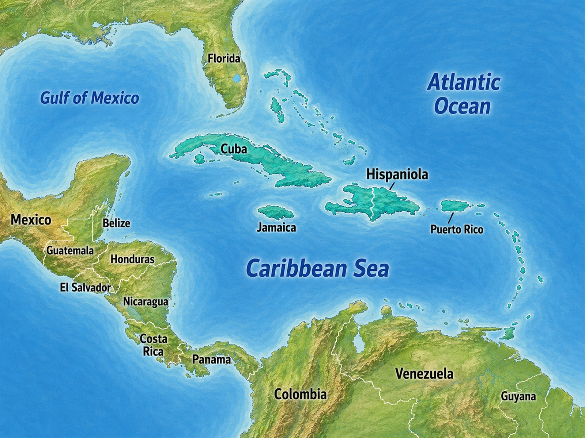
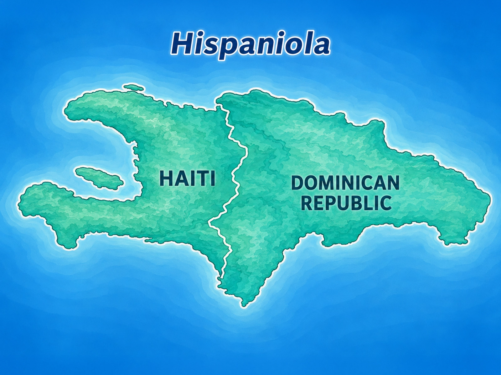

Island
A piece of land completely surrounded by water.
Between North America and South America lies the Caribbean Sea.
The sea gives the Caribbean region its name. Scattered across and around these warm waters are hundreds of islands of many different sizes.

The Caribbean is made up primarily of islands — areas of land completely surrounded by water.
A group or chain of islands is called an archipelago. The Caribbean contains several groups of islands spread across a large area of sea.
A piece of land completely surrounded by water.
A group or chain of islands located near one another.
There are far too many Caribbean islands to memorize all at once. A few larger or especially important islands provide useful landmarks for understanding the region.
Cuba is the largest island in the Caribbean. It lies south of Florida.
Hispaniola lies east of Cuba and is the second-largest island in the Caribbean.
Jamaica lies south of Cuba and west of Hispaniola.
Puerto Rico lies east of Hispaniola and is politically connected to the United States.

Hispaniola is especially important because two separate countries share the island.
Haiti occupies the western part of Hispaniola, while the Dominican Republic occupies the eastern part.
This is an important reminder that an island and a country are not always the same thing.
Puerto Rico is a Caribbean island and a territory of the United States.
Puerto Rico is not one of the fifty states. However, people born in Puerto Rico are U.S. citizens.
Its location and political status connect the Caribbean directly with the United States.